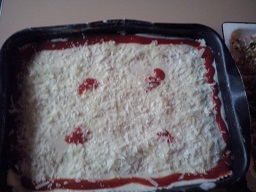
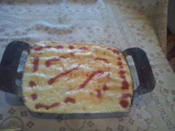
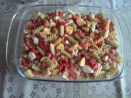
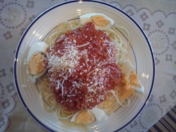

Inicio
contacto
Los platos del abuelo
La mejor web de recetas de cocina tradicional .Recetas de Pasta
Lasaña de Jamón York con Queso gratinada con Parmesano.

Canelones

Ensalada de pasta

Espaguetis con salsa boloñesa y queso mozzarella
